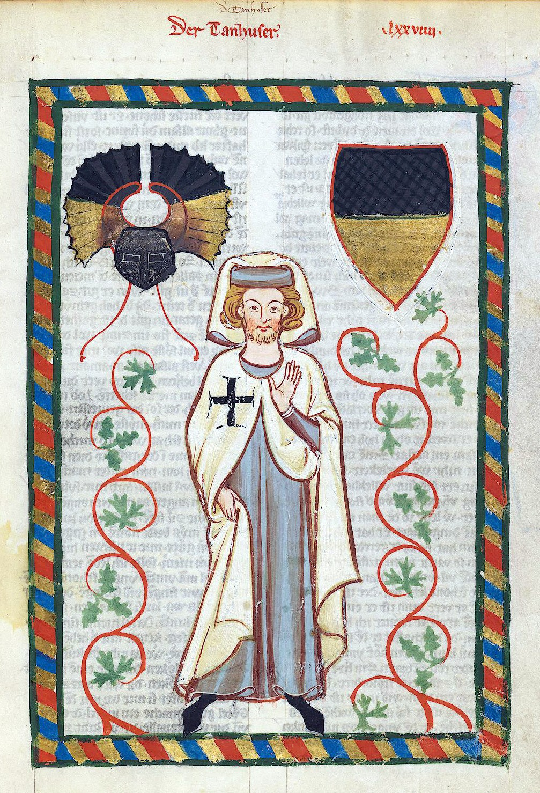

Mivel az úrról nem találtam történelmi forrást ezért Skócia törtélmét mutaom be.Az úr skóciai.
Miután a gyors társadalmi és gazdasági változások megingatták a politikai hagyományokat, a nacionalizmus újra politikai kérdés lett Skóciában és másutt is. A 19. század közepétől a 20. század közepéig létező nemzetállam folyamatosan veszti el létjogosultságát: a gazdaságot tekintve egyre kevesebb kapcsolat köti össze a politikai és a gazdasági rendszereket. A nemzetállam, úgy tűnik, elveszti jelentőségét egy olyan világban, amelyet multinacionális cégek és nemzetközi szervezetek uralnak. Politikai téren a nemzetállam létjogosultságát, az erőszak feletti kontrollt szigorúan lecsökkentették. Kulturális téren a nemzetek már nem gyakorolhatják a weberi értelemben használt kultúrpolitikát, amely a kulturális identitás politikai védelmét jelentette.
A címer amit készítettem:

Manessa-kódex
A Manesse-kódex , avagy a Große heidelberger Liederhandschrift a középkori címerművészet legszebb példái közé tartozik. Feltételezett megbízója után nevezik Manesse-kéziratnak is. A kézirat feltételezhetően a 13. század végén, esetleg a 14. század elején alakult ki, A mű a középkori német líra valamennyi szerzőjének teljes munkásságát kívánta összefoglalni. Készítője a művek elé egész oldalas fiktív portrékat állított.
A kézirat feltételezhetően a 13. század végén, esetleg a 14. század elején alakult ki, A mű a középkori német líra valamennyi szerzőjének teljes munkásságát kívánta összefoglalni. Készítője a művek elé egész oldalas fiktív portrékat állított.
